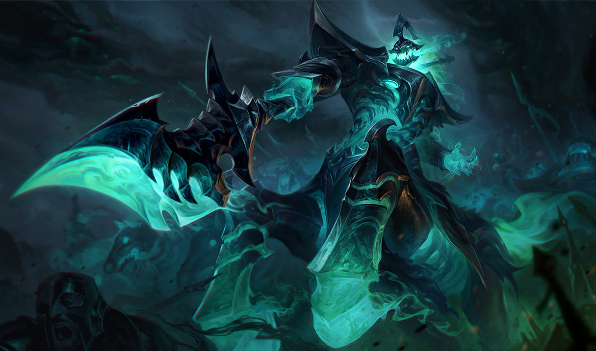

과거 동맹국들과 사절들이 축복의 빛 군도로 불렀던 이곳은 한때 고결하고 현명한 문명이 자리 잡기도 했지만, 지금은 저주받은 땅이 되어 버렸습니다.
약 천 년 전, 마법으로 인해 전례 없는 대재앙이 발생하면서 물질 세계와 영혼 세계 사이의 장벽이 파괴되었고, 이로 인해 두 세계가 합쳐지면서 모든 생명이 순식간에 파멸을 맞았죠.
현재는 사악한 검은 안개가 군도를 영원히 뒤덮고 있으며, 토양은 암흑 마법에 의해 더럽혀지고 말았습니다. 이 음침한 땅에 상륙한 무모한 인간들은 서서히 생명력을 빼앗기게 되고,
결국 잠들지 않는 탐욕스러운 망령들에게 쫓기게 됩니다.
검은 안개 안에서 목숨을 잃는 자는 영원히 이 악몽 같은 땅을 떠도는 저주에 걸리게 됩니다.
설상가상으로 그림자 군도의 힘은 해가 갈수록 더 강해지고 있으며, 그 힘을 빌려 강력한 망령들이 룬테라를 점점 잠식하고 있습니다.
엘리스

그웬
헤카림

칼리스타

카서스
마오카이

쓰레쉬

벡스

비에고

요릭